Utställningar och projekt
Prydnadsapelallé
Sommaren 2020 planterade föreningen Köpmanholmens fabriksträdgård en prydnadsapelallé i fabriksträdgården. Det blev en avslutande sal väster om Arkivsalen. Samtliga träd kunde inhandlas och planteras tack vare gåvor från privatpersoner och några lokala företag. Fotografiet är från en dimmig höstdag 2020.
Samlingsutställning
Tillsammans med Bill Olson arrangerade jag en kortare sommarutställning 2019 i Tvättstugan i Köpmanholmen.
Läs mer om utställningen här, tidningsartikel i pdf format.
Arkivsalen
Arkivsalen är den andra salen i Köpmanholmens fabriksträdgård, det vill säga fortsättningen av det konstnärliga projektet tillsammans med Anna Kristensen och styrelsen i föreningen. I Arkivsalen har olika material knutna till fabriken samlats i ett stort rutmönster på marken. Arkivsalen blev möjlig att bygga tack vare bidrag från Kulturbryggan.
Det hänger på konsten
Samlingsutställningen ”Det hänger på konsten” arrangerades av Bill Olson i Tvättstugan i Köpmanholmen. Medverkande konstnärer var Bill Olson, Lars Ahlström, Anna Kristensen, Nic Langendoen och Eva Skåreus. Bild 5 och 6 av Eva Skåreus, digital print + akvarell.
Läs mer om utställningen här, tidningsartikel från ÖA, pdf format.

 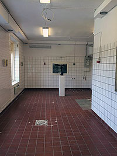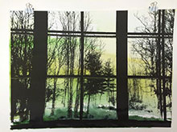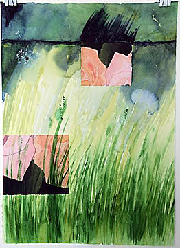
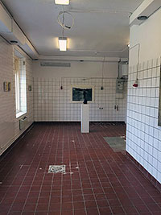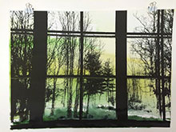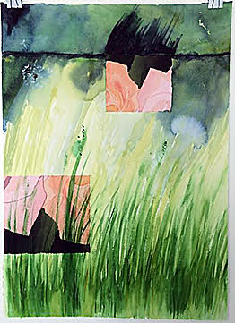
Köpmanholmens fabriksträdgård

Fabriksträdgården är en permanent konstinstallation av växter, stockar, stenar, tegel, trä grus, m.m. Syftet med fabriksträdgården är att uppmärksamma området både för vad det varit och vad det kan bli – att gestalta en syntetisering av gammalt och nytt.
Idén om Fabriksträdgården har vuxit fram under flera år och de skisser som idag finns omfattar delar av en besöksträdgård som sträcker sig utmed Bruksvägen, från Djuphamnsvägen till gamla Byskillnadsvägen ungefär mitt emot Tvättstugans västra gavel. Genom fabriksträdgården vill vi väcka nyfikenhet bland de som promenerar genom området, tankar om den verksamhet som här bedrevs och förståelse för den. Livet som fabriksarbetare var både farligt och giftigt, men samtidigt var fabriken förutsättningen för alla människor som bodde här och att Köpmanholmen byggdes och växte.
Idag är marken på fabriksområdet sanerad även om vissa delar fortfarande inte duger till att odla grönsaker på. På den sidan av Bruksvägen där Fabriksträdgården finns är det dock inga gifter kvar i marken, det är nogsamt kontrollerat.
Fabriksträdgården omfattar både konstinstallationer och planteringar, en blandning av växter och skulpturala konstruktioner. Genom dessa vill vi uppmärksamma både det nedlagda bruket, industrihistorien, den arbetarkultur som var, mötet med nutiden, människorna på platsen idag och de minnen som snart är glömda.
Området vi hyr av Örnsköldsvik kommun är ca 350 meter långt och drygt 10 meter brett. Projektet drivs av en ideell förening, Köpmanholmens fabriksträdgård, och salarna har finansierats av Kulturbryggan, Nätterlundsstiftelsen, Mikko Anderssons stiftelse samt våra privata sponsorer som alla finns namngivna på plaketterna under skylten i området.
Läs mer om projektet på Köpmanholmens fabriksträdgård.
Påstigaren / Lokal Transit
En dag i juli 2013, när sommaren var som bäst och solen värmde gott, var dessa människor nere på kajen i Köpmanholmen. De var tillfälliga besökare i skärgårdsbåtarnas väntkur. Några var långvägsresenärer, från Tjeckien eller Norge, medan andra bodde nästgårds och tog tillfället i akt att ta sig ner på kajen eller åka ut i skärgården en varm sommardag.
För att kunna ta båten, till Trysunda, Strängöarna eller Ulvön, måste du som passagerare gå genom väntkuren, dvs för en kort stund vara i transit. Statistiken säger att ca 50.000 människor passerar där varje år. 50.000 i transit på Köpmanholmens kaj…
Väntkuren är inte viktigt i sig, en plats man passerar, men en plats som på ett eller annat sätt påverkar människors identitet. Den utgör en gräns att passera inom vilken man till exempel går från bilresenär till båtresenär, från stadsbo till tillfällig skärgårdsbo, från besökare till hemmahörande. Man är i transit, ska bara genom, på väg bort, någon annanstans. Väntkuren är enbart namngivet som kur på en skylt inne i byggnaden. över ingången står det ”Påstigande”. När du går in i byggnaden tillhör du alltså kategorin ”påstigande” oavsett om du tänker stiga på båten eller inte.
Tack alla påstigare som ville delta i detta konstprojekt!
Köpmanholmens hjärta
– en dahliarabatt i det gamla fabriksområdet
Under sommaren 2011 genomförde jag ett konstprojekt i Köpmanholmens gamla fabriksområde. Projektet var en blomsterrabatt i form av ett hjärta, bestående av 440 dahlior och 112 silverekar och några solrosor samlade i en egen rabatt.
Den 2–3 juli bjöd jag inKöpmanholmsborna att hjälpa till med planteringen. Ett 30-tal personer kom. Tre tältstolar fick sedan stå kvar (efter fikaserveringen) som en del av konstprojektet och som en inbjudan för besökare att sitta ner och titta på hjärtat. Under hela sommaren blev ”Köpmanholmens hjärta” en mötesplats för många besökare. Den 16:e oktober plockades alla blommor bort.
Tankarna bakom projektet var att uppmärksamma industriområdet genom ett platsspecifikt konstverk och därigenom skapa någon form av återupprättelse, att göra platsen synligt igen, men på ett annat sätt än tidigare. Fram till mitten av 1980-talet var området tätt bebyggt med hus och industribyggnader som tillhörde bruket. Sedan revs allt och idag är det ett ingemansland, tomt och övergivet. För gamla Köpmanholmsbor verkar området mer eller mindre som en spökby, ”där stod cisternerna och där var förmansbostaden, Konsum 1:an och huggeriet”, medan för besökaren utan historisk förankring är det en flack slätt med utsikt över fjärden. Men det är också Köpmanholmens gamla hjärta, den plats där arbetet låg och den plats som utgjorde motorn i samhällsbygget.
Projektet genomfördes med stöd från Nätterlundsstiftelsen, MIVA och Bjästa Handelsträdgård.


 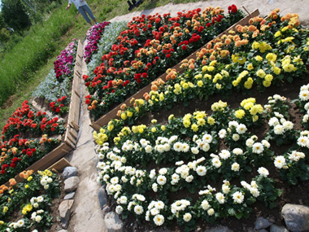
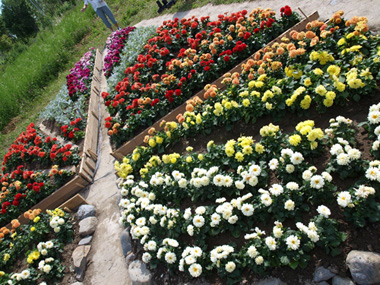
Fotografiateljé
Under 2009 fyllde den gamla fotografiateljén i Köpmanholmen 80 år. För att fira det bjöd jag in Holmenborna under fyra dagar i juli till en friluftsateljé i trädgården. En stol, en innerdörr och trädgårdens grönska utgjorde ateljé, som en replik av dåtida fotografiateljéers målade fondväggar av grönska och balustrader samt en obligatorisk stol framför. Inbjudan resulterade i 53 fotografier som visades på restaurangen Kajen.
 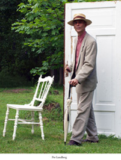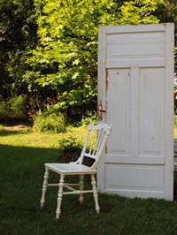
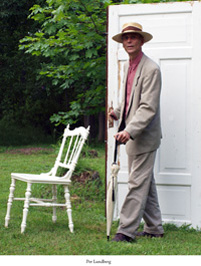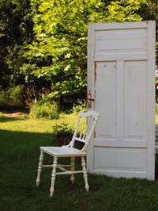 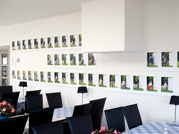
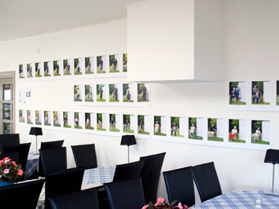
& (och)
Sommaren 2000 genomförde Kim Stenlund och jag en utställning på Norrbyskär. Kim visade smycken och textila bilder medan jag visade akvareller, digitaliserade akvareller och akvarelliserade digitaler med rosor och clownen.
Rosor


 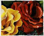
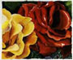

 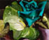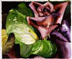
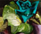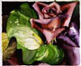
Clowner


 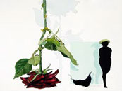
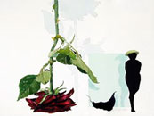